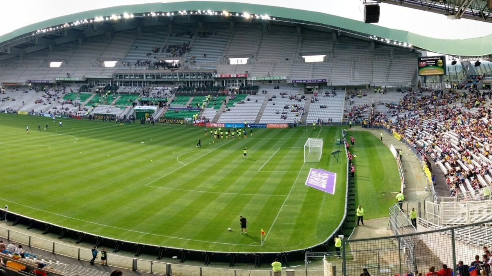

프랑스 낭트 경기장 주차장에 태양광 그늘막 6기…지자체 회사 3기·시민 출자회사 3기 나눠 짓는다

라 보주아르 주차장 패널 4,500㎡·연 1.1GWh 추정, 지름 2km 원 안 기업에 고정 요금 판매 추진…시민 주주 150명, 7개 시·읍 공영주차장 9곳으로 넓힌다
프랑스 서부 낭트의 라 보주아르 축구경기장 S3 주차장에 태양광 그늘막 6기를 세우는 공사가 기초를 마치고 철골 조립에 들어갔으며, 6기 가운데 3기는 낭트 광역 지자체(낭트 메트로폴)가 세운 에너지 생산 회사 '낭트 메트로폴 에네르지'가, 나머지 3기는 지역 시민 모임 3곳과 손잡은 시민 출자회사 '코와트(CoWatt)'가 맡는다. 패널 면적은 모두 4,500㎡로 한 해 1.1GWh를 생산할 것으로 추정되며, 메트로폴은 이를 난방·온수를 뺀 약 950명의 전기 사용량에 견줬다. 9월 시작한 공사는 콘크리트를 덜 쓰려고 미세 말뚝을 7m 깊이로 박았고, 약 한 달 철골 조립과 11월 패널 받침 설치를 거쳐 2027년 1월 배전망 연결, 1월 중순 주차장 재개장을 예정하고 있다. 전기는 발전 설비와 고객이 지름 2km 원 안에 있어야 하는 '집단 자가소비' 방식으로 근처 호텔·상점·공장에 여러 해 고정 요금으로 팔 계획인데, 판매 가격은 공개되지 않았고 프로축구단 FC 낭트와도 협의 중이지만 합의는 발표되지 않았다. 시민 몫을 맡은 코와트는 사업 누리집에 모금 목표 39만 유로를 내걸었고 메트로폴은 주주 150명이 이미 참여했다고 밝혔으며, 이 출자는 손실 위험이 따르는 투자이지 가계 보조금이 아니다. 이번 공사는 메트로폴 7개 시·읍 공영주차장 9곳에 그늘막을 세우는 계획의 첫 사업으로, 구상 단계인 쿠에롱 환승주차장까지 합치면 패널 약 1만6,000㎡에서 한 해 약 4.1GWh(약 3,500명 사용량)를 낼 것으로 추정되며, 지역 재생에너지 공기업 EnR44·공공 금융기관 방크 데 테리투아르와 함께 회사를 세운 메트로폴은 소비 에너지 가운데 지역 재생에너지 비중을 2030년 20%, 2050년 50%로 높인다는 목표다.
시민에너지 관점
같은 주차장 안에서 그늘막 6기를 지자체 회사와 시민 출자회사가 3기씩 나눠 짓고 시민 주주 150명이 이미 참여했다는 것은, 공공 부지 태양광에서 공공 몫과 시민 몫이 나란히 설 수 있음을 보여 준다. 시민 출자에는 손실 위험이 따른다는 우려가 있지만, 지자체 회사가 같은 부지에서 함께 사업을 맡고 지름 2km 안 기업에 여러 해 고정 요금으로 전기를 파는 구조는 그 위험을 덜어 주는 장치가 될 수 있다. 공영주차장은 주민이 날마다 쓰는 땅인 만큼, 그 위에서 나는 전기의 이익이 지자체와 이웃 주민·기업에게 돌아가야 재생에너지가 지역 경제 안에서 돈다. 국내 공영주차장·공공부지 태양광도 사업마다 주민 출자 몫을 정해 두고 가까운 수요처와 묶어 짓는 방식을 제도로 검토해야 한다.
출처: Économie Matin 2026-10-30 기자 미표기 원문 보기
フランス・ナントの競技場駐車場にソーラーシェード6基…自治体の会社が3基、市民出資会社が3基を分担
ラ・ボージョワール駐車場のパネル4,500㎡・年1.1GWhと推計、直径2kmの円内の企業へ固定料金での販売を目指す…市民株主150人、7市町の公営駐車場9カ所に拡大へ
フランス西部ナントのラ・ボージョワール・サッカー競技場S3駐車場で、ソーラーシェード（太陽光パネル付きの屋根）6基を建てる工事が基礎を終えて鉄骨の組み立てに入り、6基のうち3基はナント広域自治体（ナント・メトロポール）が設立したエネルギー生産会社「ナント・メトロポール・エネルジー」が、残る3基は地域の市民グループ3団体と組む市民出資会社「CoWatt（コワット）」が担う。パネル面積は合計4,500㎡で年1.1GWhの発電が見込まれ、メトロポールは暖房・給湯を除く約950人分の電力使用量に相当するとしている。9月に始まった工事では、コンクリートを減らすためマイクロパイルを深さ7mまで打ち込み、約1カ月の鉄骨組み立てと11月のパネル架台設置を経て、2027年1月に配電網へ接続し、1月中旬に駐車場を再開する予定だ。電力は、発電設備と顧客が直径2kmの円内になければならない「集団自家消費」方式で近隣のホテル・商店・工場に複数年の固定料金で販売する計画だが、販売価格は公表されておらず、プロサッカークラブFCナントとも協議中ながら合意は発表されていない。市民側を担うCoWattは事業サイトで募集目標39万ユーロを掲げ、メトロポールは株主150人がすでに参加したと説明しており、この出資は損失リスクを伴う投資であって家計への補助金ではない。今回の工事はメトロポール7市町の公営駐車場9カ所にシェードを設ける計画の第1弾で、構想段階のクエロンのパークアンドライド駐車場を含めるとパネル約1万6,000㎡で年約4.1GWh（約3,500人分）の発電が見込まれ、地域の再生可能エネルギー公社EnR44、公的金融機関バンク・デ・テリトワールと共に会社を設立したメトロポールは、消費エネルギーに占める地域の再生可能エネルギーの割合を2030年に20%、2050年に50%へ高める目標を掲げている。
市民エネルギーの視点
同じ駐車場の中でシェード6基を自治体の会社と市民出資会社が3基ずつ分担し、市民株主150人がすでに参加していることは、公有地の太陽光で公共の持ち分と市民の持ち分が並び立てることを示している。市民出資には損失リスクが伴うとの懸念もあるが、自治体の会社が同じ敷地で事業を共に担い、直径2km以内の企業に複数年の固定料金で電気を売る仕組みは、そのリスクを和らげる装置になりうる。公営駐車場は住民が毎日使う土地であり、その上で生まれる電気の利益が自治体と近隣の住民・企業に戻ってこそ、再生可能エネルギーが地域経済の中で循環する。韓国の公営駐車場・公有地の太陽光も、事業ごとに住民出資の持ち分を定め、近くの需要家と組み合わせて建てる方式を制度として検討すべきだ。
出典: Économie Matin 2026-10-30 記者名なし 原文を読む
法国南特球场停车场建6座光伏遮阳棚…地方政府公司与市民出资公司各建3座
博茹瓦尔停车场光伏板4,500㎡、预计年发电1.1GWh，计划以固定价格卖给直径2公里圆圈内的企业…市民股东150人，将扩大到7个市镇的9处公共停车场
法国西部南特市博茹瓦尔足球场S3停车场的6座光伏遮阳棚工程已完成地基、进入钢结构组装阶段，其中3座由南特大都会（南特广域地方政府）设立的能源生产公司"南特大都会能源"负责，另外3座由与当地3个市民团体合作的市民出资公司CoWatt负责。光伏板总面积4,500㎡，预计年发电1.1GWh，南特大都会将其比作约950人除供暖和热水以外的用电量。工程于9月开工，为减少混凝土用量，把微型桩打入地下7米，预计经过约一个月的钢结构组装和11月的光伏支架安装后，于2027年1月接入配电网，1月中旬重新开放停车场。所发电力计划以"集体自发自用"方式，按多年固定价格卖给附近的酒店、商店和工厂，这种方式要求发电设施与用户位于直径2公里的圆圈之内；售电价格尚未公布，与职业足球俱乐部南特足球俱乐部（FC Nantes）也在协商中，但尚未宣布达成协议。负责市民部分的CoWatt在项目网站上列出39万欧元的募资目标，南特大都会表示已有150名股东参与，这笔出资是伴随亏损风险的投资，而不是给家庭的补贴。这项工程是在南特大都会7个市镇9处公共停车场建设遮阳棚计划的第一个项目，若加上仍处于构想阶段的库埃龙换乘停车场，预计光伏板约1万6,000㎡、年发电约4.1GWh（约合3,500人用电量）；与地区可再生能源公营企业EnR44、公共金融机构"地方银行"（Banque des territoires）共同设立公司的南特大都会，目标是让本地可再生能源在能源消费中的比重2030年达到20%、2050年达到50%。
市民能源视角
同一个停车场里，6座遮阳棚由地方政府公司和市民出资公司各建3座，且已有150名市民股东参与，这说明在公共用地光伏项目中，公共份额与市民份额可以并肩而立。有人担心市民出资会带来亏损风险，但由地方政府公司在同一块地上共同承担项目、并以多年固定价格把电卖给直径2公里内企业的结构，可以成为减轻这种风险的机制。公共停车场是居民每天使用的土地，只有其上产生的电力收益回到地方政府和周边居民、企业手中，可再生能源才能在地方经济中循环。韩国的公共停车场和公共用地光伏也应在制度上考虑为每个项目预留居民出资份额，并与附近用电方捆绑建设。
来源: Économie Matin 2026-10-30 未署名 查看原文
Six solar canopies rise over a stadium car park in Nantes, France, split between a council energy company and a citizen-funded company
4,500 m² of panels at La Beaujoire expected to produce 1.1 GWh a year, to be sold at fixed prices to businesses within a circle 2 km in diameter; 150 citizen shareholders, with the programme set to cover nine public car parks in seven municipalities
Foundations are finished and steel frames are going up for six solar canopies on car park S3 at the Stade de la Beaujoire football ground in Nantes, western France, with three to be built by Nantes Métropole Énergies, the energy production company set up by the Nantes metropolitan authority, and the other three by CoWatt, a citizen-funded company working with three local citizen groups. The panels will cover 4,500 m² in total and are expected to produce 1.1 GWh a year, which the metropolitan authority likens to the electricity use of about 950 people, excluding heating and hot water. Work began in September, with micro-piles driven 7 m into the ground to reduce the amount of concrete; after about a month of frame assembly and installation of the panel supports in November, connection to the distribution grid is scheduled for January 2027 and the car park is due to reopen in mid-January. The power is to be sold at fixed prices over several years to nearby hotels, shops and factories under a "collective self-consumption" scheme that requires generators and customers to sit within a circle 2 km in diameter; no sale price has been disclosed, and talks are under way with the professional football club FC Nantes, though no agreement has been announced. CoWatt, which handles the citizen share, lists a fundraising target of 390,000 euros on its project website, and the metropolitan authority says 150 shareholders have already signed up, an investment that carries a risk of loss rather than a subsidy to households. The project is the first in a plan to put canopies over nine public car parks in seven municipalities of the metropolitan area, which, counting a park-and-ride site in Couëron still at the planning stage, is expected to reach about 16,000 m² of panels producing about 4.1 GWh a year (the use of about 3,500 people); the metropolitan authority, which set up its energy company with the regional public renewable energy company EnR44 and the public lender Banque des territoires, aims for local renewables to cover 20% of the energy it consumes by 2030 and 50% by 2050.
Citizen Energy View
That the six canopies on a single car park are split three and three between a council company and a citizen-funded company, with 150 citizen shareholders already on board, shows that public and citizen stakes can stand side by side in solar projects on public land. Some worry that citizen investment carries the risk of losses, but having a council company share the work on the same site and selling the power at fixed prices over several years to businesses within 2 km can help soften that risk. Public car parks are land residents use every day, and only when the returns from the electricity generated above them flow back to the council and to neighbouring residents and businesses will renewable energy circulate within the local economy. Korea should likewise consider rules that set aside a resident investment share in every solar project on public car parks and public land, and pair each project with nearby electricity users.
Source: Économie Matin 2026-10-30 No byline Read the original